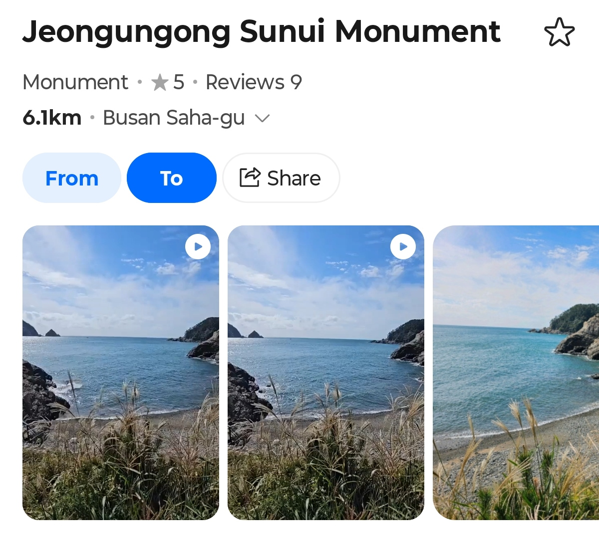

한국 여행 2주차.
D는 부산 바닷가 둘레길을 걷고 있었다.
(정확히 말하자면, 다대포해수욕장 근처 해안절벽인 몰운대의 대표적 산책로, 갈맷길을.)
근처에 볼 만한 게 뭐가 있을지 찾아보다가 그가 발견한 것은,
바로 정운공 순의비.

(부산지방문화재 기념물 제 20호. 임진왜란 때 일어났던 많고도 많은 전투 중, 부전포 해전에서 이순신 장군의 우부장으로 참전했다가 전사했던 정운 장군을 기리기 위해 세워진 비석이다. 사실 난 이 이야기를 들으면서 이 국가유산의 존재를 처음 알게 되었다…)
이때 D는 매우 큰 실수 2가지를 범하고 말았다.
MISTAKE 1:

네이버 지도에 올라와 있는 사진들을 보니, 지금 걷고 있는 산책로 근처인 것처럼 보였다.
“그럼 그냥 이 길로 쭉 가면 되겠네!"
MISTAKE 2:
계속 걷다 보니, 절벽이 나왔다. 이쪽으로는 더 이상 갈 수 없다.
“이제 어떡하지…”
고민하던 D의 눈에 띈 것은:
무성한 나뭇잎에 가려져 보일 듯 말 듯 한 오솔길.
“음…”
“이쪽으로 가면 비석이 나오겠지… ?”